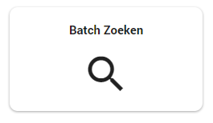
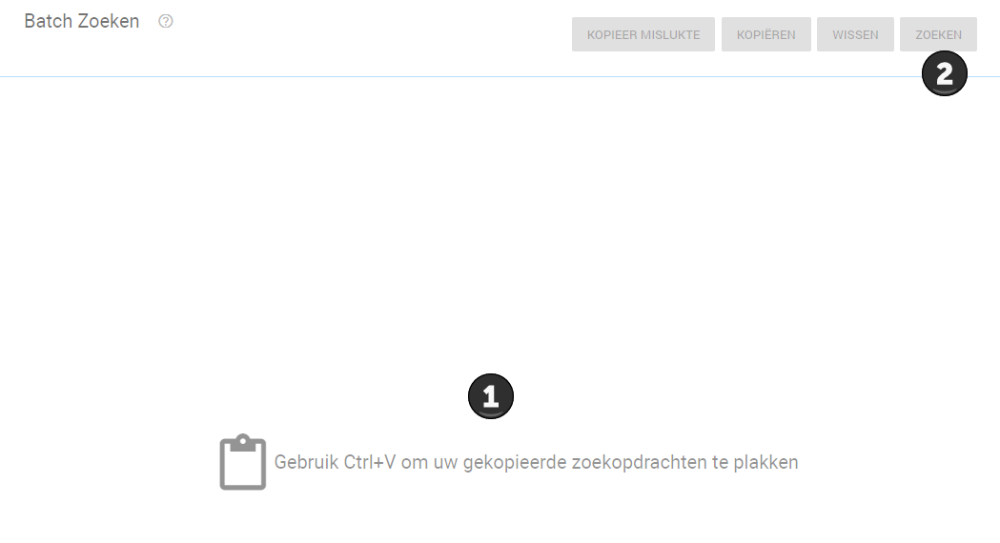
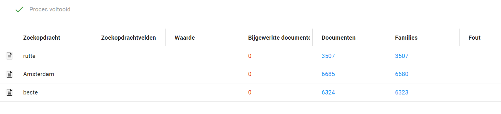

In een batch zoekopdracht kunt u meerdere zoekopdrachten tegelijk uitvoeren om te kijken hoeveel documenten er gevonden worden. Dit is erg handig om de kwaliteit van uw trefwoorden mee te testen. Immers is het inefficiënt om trefwoorden op te nemen in een zoekopdracht wanneer deze geen resultaten opleveren.
Om een batch zoekopdracht uit te voeren gaat u naar Batch Zoeken. In het Woo dashboard klikt u op de tegel Batch Zoeken.

U dient uw trefwoorden eerst onder elkaar in een Excel sheet of ander tekstverwerkingsprogramma zoals Word of Kladblok te plaatsen. Vervolgens kopieert u al uw trefwoorden en plakt u deze in Batch Zoeken, zoals hieronder in het voorbeeld bij nummer 1. Vervolgens klikt u op Zoeken (nummer 2) om te zoeken.

Vervolgens ziet u hoeveel documenten er per trefwoord gevonden worden. Zie voor meer informatie, Batch Search (Engels).
